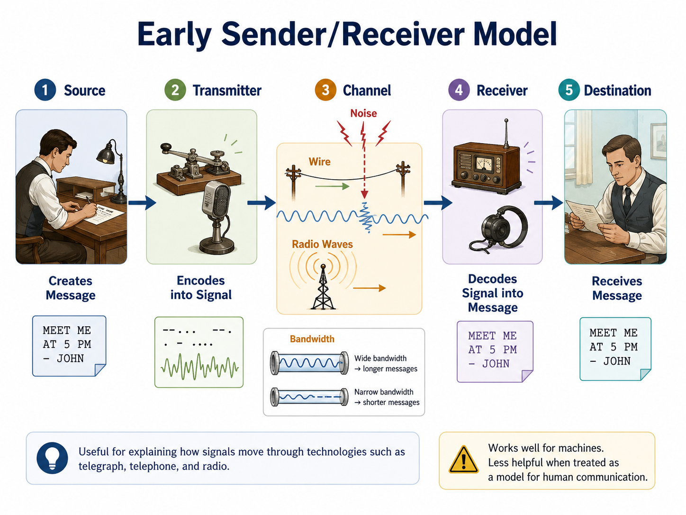
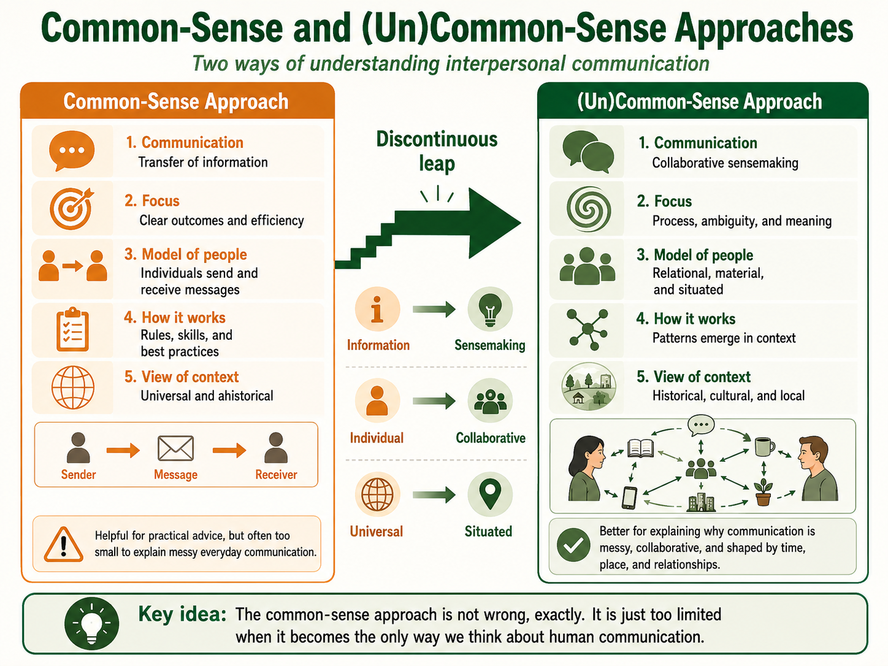

<style>
  :root { --cream:#fff1dd; --paper:#fffdf8; --white:#fff; --ink:#151515; --muted:#5b514a; --clay:#b85f32; --clay-dark:#8f4525; --orange:#ff8846; --gold:#f5b94f; --green:#34704c; --sage-soft:#eef2e8; --blue:#005f78; --tan:#d8c9b8; --max:1180px; }
  * { box-sizing: border-box; }
  .miscomm-webbook { margin:0; background:var(--cream); color:var(--ink); font-family:Georgia,"Times New Roman",serif; font-size:clamp(18px,1.12vw,20px); line-height:1.64; }
  .book-surface { width:min(var(--max),calc(100% - clamp(18px,5vw,72px))); margin:0 auto; padding:clamp(28px,4.4vw,62px) clamp(16px,3vw,42px); counter-reset:chapter-section chapter-page; }
  .book-header { display:grid; grid-template-columns:minmax(0,1fr) auto; gap:1rem; align-items:end; margin-bottom:clamp(1.1rem,3vw,2rem); padding-bottom:.85rem; border-bottom:1px solid var(--tan); font-family:Arial,Helvetica,sans-serif; }
  .book-header-title { margin:0; font-size:clamp(.92rem,1.3vw,1.05rem); font-weight:900; line-height:1.22; }
  .book-header-author { display:block; margin-top:.18rem; color:var(--muted); font-size:.78rem; font-weight:700; letter-spacing:.04em; text-transform:uppercase; }
  .chapter-kicker { margin-bottom:clamp(1.1rem,3vw,2rem); color:var(--muted); font-family:Arial,Helvetica,sans-serif; font-size:.84rem; font-weight:800; letter-spacing:.08em; text-transform:uppercase; }
  .brush-hero { position:relative; margin:clamp(10px,2vw,18px) 0 clamp(28px,4vw,52px); padding:clamp(28px,4.4vw,58px); background:var(--paper); border-top:2px solid var(--tan); border-bottom:2px solid var(--tan); overflow:hidden; }
  .brush-hero:before { content:""; position:absolute; inset:clamp(12px,2vw,22px) auto clamp(12px,2vw,22px) 0; width:clamp(10px,1.6vw,18px); background:var(--gold); }
  .brush-hero:after { content:""; position:absolute; left:clamp(22px,4vw,42px); right:clamp(22px,4vw,42px); bottom:clamp(12px,2vw,20px); height:4px; background:var(--orange); }
  .brush-hero-inner { display:grid; grid-template-columns:minmax(108px,.26fr) minmax(0,1fr); align-items:stretch; min-height:clamp(210px,24vw,310px); border:1px solid var(--tan); }
  .chapter-number { display:grid; align-content:center; padding:clamp(1.2rem,2.7vw,1.9rem); background:var(--clay); color:var(--white); font-family:Arial,Helvetica,sans-serif; font-size:clamp(2.4rem,5vw,5rem); font-weight:900; line-height:.86; }
  .chapter-number span { display:block; margin-bottom:.55rem; color:#ffe4cc; font-size:.24em; letter-spacing:.12em; text-transform:uppercase; }
  .hero-title-wrap { z-index:1; max-width:900px; padding:clamp(1.6rem,4.2vw,3.4rem) clamp(1.4rem,3.7vw,3rem); background:var(--white); }
  .hero-title-wrap:before { content:""; display:block; width:min(58%,340px); height:6px; margin-bottom:clamp(.85rem,2vw,1.35rem); background:var(--gold); }
  .hero-title-wrap h1 { margin:0; font-family:Arial,Helvetica,sans-serif; font-size:clamp(2.35rem,5.5vw,5.2rem); font-weight:900; letter-spacing:-.025em; line-height:.98; }
  .chapter-subtitle { max-width:38rem; margin:1rem 0 0; color:var(--blue); font-family:Arial,Helvetica,sans-serif; font-size:clamp(1.2rem,2vw,1.7rem); font-weight:800; line-height:1.22; }
  .opening-spread,.textbook-spread,.recap,.back-matter { position:relative; margin:0 0 clamp(24px,4.4vw,54px); padding:clamp(24px,4vw,50px); background:var(--paper); border:1px solid rgba(216,201,184,.92); box-shadow:0 14px 34px rgba(21,21,21,.07); overflow:visible; counter-increment:chapter-page; }
  .opening-spread { display:grid; grid-template-columns:minmax(0,1fr) minmax(0,1fr); gap:clamp(30px,5vw,68px); align-items:start; }
  .section-heading { margin:0 0 .7rem; padding-top:.22rem; color:var(--ink); font-family:Arial,Helvetica,sans-serif; font-size:clamp(1.45rem,2.2vw,2.05rem); font-weight:900; line-height:1.08; }
  .section-heading:before { content:""; display:block; width:4.6rem; height:5px; margin-bottom:.38rem; background:var(--clay); }
  .primary-heading { font-size:clamp(1.65rem,2.55vw,2.35rem); }
  .secondary-heading { color:var(--blue); font-size:clamp(1.24rem,1.9vw,1.7rem); }
  .section-number,.subsection-number { display:inline-flex; align-items:center; justify-content:center; margin-right:.65rem; font-family:Arial,Helvetica,sans-serif; font-weight:900; line-height:1; }
  .section-number { min-width:2.75rem; height:2.75rem; color:var(--white); background:var(--clay); border-radius:50%; font-size:1.08rem; }
  .subsection-number { min-width:3.2rem; color:var(--blue); border-bottom:4px solid var(--blue); font-size:.98rem; }
  .reading-column>p,.reading-column>h2,.reading-column>ul,.reading-column>ol { max-width:64ch; }
  .reading-column::after { content:""; display:block; clear:both; }
  .reading-column p,.back-matter p,.back-matter li { margin:0 0 .68em; }
  .dropcap:first-letter { float:left; padding:.06em .12em 0 0; font-size:4.6em; font-weight:700; line-height:.78; }
  .objective-list { padding:0; margin:0; list-style:none; font-size:clamp(1.08rem,1.3vw,1.25rem); }
  .objective-list li { position:relative; padding-left:1.35rem; margin-bottom:.95rem; }
  .objective-list li:before { content:"-"; position:absolute; left:0; font-family:Arial,Helvetica,sans-serif; font-weight:900; }
  .callout { clear:both; margin:1rem 0; padding:1rem 1.1rem; background:#fff7db; border-left:5px solid var(--gold); font-size:clamp(1rem,1.08vw,1.12rem); line-height:1.48; }
  .callout-label { display:block; margin-bottom:.45rem; color:#8a5f00; font-family:Arial,Helvetica,sans-serif; font-size:clamp(.78rem,.82vw,.9rem); font-weight:900; letter-spacing:.06em; text-transform:uppercase; }
  .callout.key-term,.callout.author-note,.callout.case { float:none; width:min(100%,640px); }
  .callout.case,.callout.pause,.callout.author-note { background:var(--sage-soft); border-left-color:var(--green); }
  .callout.case .callout-label,.callout.pause .callout-label,.callout.author-note .callout-label { color:var(--green); }
  .callout.research-check { padding:0; background:var(--paper); border:1px solid rgba(216,201,184,.95); border-top:8px solid var(--green); box-shadow:0 12px 28px rgba(21,21,21,.08); overflow:hidden; }
  .research-header { padding:1rem 1.4rem; background:var(--white); border-bottom:1px solid var(--tan); }
  .research-title { margin:0; color:var(--clay-dark); font-family:Arial,Helvetica,sans-serif; font-size:clamp(1.25rem,2vw,1.8rem); font-weight:900; }
  .research-body { padding:1rem 1.4rem; }
  .textbook-figure { margin:1.35rem 0 1.55rem; }
  .figure-frame { padding:.82rem; background:var(--paper); border:1px solid var(--tan); border-top:6px solid var(--gold); border-left:8px solid var(--gold); box-shadow:0 12px 28px rgba(21,21,21,.1); }
  .figure-title { margin:0 0 .55rem; padding-left:.55rem; font-family:Arial,Helvetica,sans-serif; font-size:.92rem; font-weight:900; line-height:1.2; }
  .figure-media { display:grid; place-items:center; padding:1rem; background:var(--white); border:1px solid rgba(216,201,184,.78); }
  .figure-media img { display:block; width:100%; height:auto; }
  figcaption { margin-top:.7rem; color:var(--muted); font-size:.82rem; line-height:1.38; }
  .recap-grid { display:grid; grid-template-columns:repeat(2,minmax(0,1fr)); gap:1rem; }
  .recap-item { padding-top:.75rem; border-top:1px solid var(--tan); }
  .recap-item strong { display:block; margin-bottom:.35rem; font-family:Arial,Helvetica,sans-serif; font-size:.8rem; letter-spacing:.05em; text-transform:uppercase; }
  .references p { padding-left:1.5rem; text-indent:-1.5rem; color:var(--muted); font-size:.92rem; }
  @media (min-width:900px){ .callout.key-term,.callout.author-note,.callout.case{ clear:right; float:right; width:clamp(230px,24%,300px); margin:.15rem 0 .85rem 1.35rem; padding:.78rem .85rem; font-size:clamp(.9rem,.86vw,1rem); line-height:1.42; } }
  @media (max-width:900px){ .opening-spread,.brush-hero-inner,.recap-grid{grid-template-columns:1fr;} .reading-column>p,.reading-column>h2,.reading-column>ul,.reading-column>ol{max-width:none;} .callout.key-term,.callout.author-note,.callout.case{float:none;width:100%;margin:.9rem 0;} .book-surface{width:min(100%,calc(100% - 22px));} }
</style>
<section class="miscomm-webbook"><main class="book-surface">
  <header class="book-header"><div><p class="book-header-title">(Mis)Communication: An (Un)Commonsense Approach to Interpersonal Communication</p><span class="book-header-author">Jordan Allen, Ph.D.</span></div></header>
  <div class="chapter-kicker">Chapter 1</div>
  <header class="brush-hero"><div class="brush-hero-inner"><div class="chapter-number"><span>Chapter</span>1</div><div class="hero-title-wrap"><h1>(Un)Common Sense</h1><p class="chapter-subtitle">Understanding Interpersonal Communication</p></div></div></header>

  <section class="opening-spread" aria-label="Chapter overview and learning objectives"><div><h2 class="section-heading">Chapter Overview</h2><p>This chapter is about approaches. Chapter 0 gave us some context for why our approach to communication matters. Here, we focus on the <strong>common-sense approach</strong>, the <strong>(un)commonsense approach</strong>, and the <strong>discontinuous leaps</strong> between them.</p><p>The common-sense approach treats communication like the transfer of information. The (un)commonsense approach treats <strong>interpersonal communicating</strong> as partaking in social interaction. This chapter will not ask you to throw away everything you have ever heard about communication. Some common-sense advice is useful. The problem is not that common sense is always wrong. The problem is that common sense becomes too small when it is the only approach we have.</p></div><div><h2 class="section-heading">Learning Objectives</h2><ol class="objective-list"><li>Describe the common-sense approach to interpersonal communication.</li><li>Explain how the common-sense approach grew out of mechanistic transmission models.</li><li>Identify three assumptions of the common-sense approach: transfer of information, individual/cognitivism, and universal/ahistorical communication.</li><li>Explain what a discontinuous leap is and why these leaps are necessary.</li><li>Compare three discontinuous leaps.</li><li>Explain what good communication looks like from each approach.</li></ol></div></section>

  <section class="textbook-spread numbered-section"><div class="reading-column"><h2 class="section-heading primary-heading"><span class="section-number">1</span>A Communication Contradiction</h2><p class="dropcap">Nearly ten years ago, I taught my first interpersonal communication course.</p><p>As a new instructor, I faced many challenges that ranged from the clarity of assignment instructions to how quickly I talked. Most of these challenges I expected. I was a novice teacher. While I received excellent support from my professors, I knew that a lot of my development as a teacher would happen in the classroom.</p><p>One challenge I did not expect happened on the first day of class.</p><p>I remember the moment crisply. My heart was doing its best to beat out of my chest, and my lungs felt as though they were grating against my ribcage. The year before, the students seated in front of me would have been my peers. An acceptance into the Communication master's program at the University of Montana had made me their instructor. I am still not totally convinced everyone involved had thought that decision all the way through.</p><p>I nervously shuffled my papers and pretended not to listen to the students' somewhat hushed conversations. As a novice instructor, I had a minute-by-minute lesson plan. We would start with some less-than-creative icebreakers, move on to overviewing the course and syllabus, and end with students filling out an "about me" worksheet. I was not confident, exactly, but I was prepared.</p><p>Or so I thought.</p><p>At 10:00 on the dot, I raised my voice to welcome the students. I introduced myself quickly. At that time in my career there was not too much to introduce, and I talked fast.</p><p>"Before we get going, does anyone have any questions?" I asked, hoping there might be some silence to let me catch my breath.</p><p>"Yeah," a student said, raising his hand. "Are we going to be learning about new stuff, or is this all just going to be common sense?"</p><p>I took a deep breath and shuffled my already organized papers to buy myself a moment.</p><p>The question took me by surprise. My five years of education and research had taught me that very little about communication was common sense. If it was common sense, then sense was not all that common.</p><p>To this day, I am grateful for that student. His question helped me discover a problem that would follow me for years: Why does communication seem like common sense when communicating is so often confusing, emotional, contradictory, and weird?</p><p>I wish I could say that I had a witty response that was both gentle and direct. I did not. To be honest, I cannot recall my exact response. After years of mentally replaying that episode, I know how I would respond today:</p><p class="pullquote">"If it feels like common sense, then I am not doing my job."</p><p>The student's question still hangs over me. Where does the idea that communication is common sense come from?</p><p>Part of the answer comes from social media, where creators offer communication advice, tips, tricks, and hacks. More than one content creator has made a living suggesting that effective communicators are clear, concise, confident, calm, perfectly timed, emotionally regulated, and able to maintain eye contact without looking like they are trying to win a staring contest.</p><p>Another source may be introductory textbooks. Textbook authors have the thankless job of balancing simplicity and useful complexity. When concepts are made too simple, they look obvious and maybe a little boring. When concepts are made too complex, they can overwhelm students and send them gently into the arms of TikTok.</p><p>Still, if a book claims to teach the "foundations" of interpersonal communication, those foundations should match the thing we actually experience. Foundationally, interpersonal communicating is complex, confusing, and messy. The complexity of our approach should match the complexity of our experience.</p><p>That is the contradiction. We are told communication is the key to relationships, work, leadership, friendship, family, conflict, happiness, and probably world peace if we just squint hard enough. At the same time, people often feel bad at communicating. They feel misunderstood. They feel stuck. They feel like they followed the rules and still did not get the outcome they wanted.</p><p>So maybe the problem is not that people are simply failing to communicate well.</p><p>Maybe the problem is the approach.</p></div></section>

  <section class="textbook-spread numbered-section"><div class="reading-column"><h2 class="section-heading primary-heading"><span class="section-number">2</span>What We Mean by Common Sense</h2><p class="dropcap">Before we can discuss the common-sense approach, we need to slow down and ask what common sense means.</p><p>Usually, common sense means good judgment that most people agree with. If someone says, "It is just common sense," they usually mean that the answer should be obvious. You should not need a theory. You should not need a class. You should not need a 300-page textbook with orange design elements and a questionable number of examples about group projects.</p><p>In this book, I am using common sense a little differently.</p><p>For this chapter, common sense refers to <strong>commonsensical knowledge</strong>. Philosopher and psychologist Marion Ledwig helps us think about this difference. Common knowledge is closer to what people generally know, share, repeat, or do. Commonsensical knowledge goes a little deeper. It is the shared "should" layer underneath everyday life. It tells us what a reasonable person should know, how people should communicate, what should be obvious, what should count as caring, what should count as rude, and what kinds of misunderstandings should or should not happen.</p><aside class="callout key-term"><strong class="callout-label">Key Term: Commonsensical Knowledge</strong><p>Commonsensical knowledge is the shared "should" layer of everyday life. It tells people what should be obvious, normal, reasonable, caring, rude, effective, or ineffective.</p></aside><p>Commonsensical knowledge shows up in sentences like these:</p><ul><li>"Everyone knows communication is about being clear."</li><li>"You should just say what you mean."</li><li>"If someone cared, they would know."</li><li>"Good communicators are direct."</li><li>"That is just how relationships work."</li><li>"That is just common sense."</li></ul><p>The important thing is that these statements do not usually feel like theories. They feel like reality. People do not usually say, "I am applying a culturally inherited assumption about communication." They say, "Obviously, they should have known better."</p><p>That is what makes commonsensical knowledge so powerful and so hard to examine. It does not feel like an assumption because it feels too obvious to question.</p><aside class="callout case"><strong class="callout-label">Connect the Ideas: Common Sense Is Knowing</strong><p>Notice the link to Chapter 0: commonsensical knowledge is a product of <strong>knowing</strong>, not <strong>understanding</strong>. It gives us familiar rules, labels, and assumptions that feel obvious. Understanding asks us to slow down and ask what those rules hide, where they came from, and whether they actually fit the situation.</p></aside><p>Ledwig's work is useful here because she connects common sense to folk psychology, or the everyday assumptions people use to explain minds, motives, intentions, feelings, and actions. In communication, that matters because we are constantly making judgments about what people meant, what they intended, what they should have known, and what their behavior says about them.</p><p>This is where commonsensical knowledge becomes especially important for interpersonal communication. Communication does not happen only through words. It also happens through assumptions about what words, silence, emotion, timing, tone, conflict, and care are supposed to mean.</p><p>Sometimes those assumptions help. They let us move through social life without analyzing everything from scratch. I do not recommend pausing every three seconds to conduct a full theory audit of whether someone's "sure" text means "yes," "no," "I hate you," or "I am currently in line at Target and cannot emotionally engage with punctuation."</p><p>But those shortcuts can become dangerous when people mistake them for understanding.</p><p>Commonsensical knowledge often hides its own conditions. It gives us a rule without showing us the situation where that rule works. For example, "be direct" can be useful advice in some contexts. But when it becomes commonsensical knowledge, it can turn into a moral rule: good communicators are direct, indirect people are unclear, and misunderstanding happens because someone failed to say things plainly enough.</p><p>That assumption might make sense in one situation and completely miss what is happening in another.</p><p>This is why proverbs are helpful examples. "Absence makes the heart grow fonder" and "out of sight, out of mind" can both sound true. They cannot both be universal truths in the same way at the same time. The point is not that proverbs are useless. The point is that common-sense rules are often context-dependent even when they sound universal.</p><p>Communication advice works the same way. It sounds universal because it has been repeated so many times. But once we examine it closely, we can see that it depends on context, relationship, culture, power, history, timing, risk, emotion, and interpretation.</p><p>So the goal of this chapter is not to reject common sense completely. Common sense helps people navigate everyday life. It gives us a starting point. The problem is what happens when commonsensical knowledge becomes invisible. When a communication assumption is buried deeply enough, people stop treating it as an assumption and start treating it as the truth.</p><p>That is where misunderstanding begins to look like certainty.</p><p>A person may not simply think, "I interpreted their silence as anger." They may think, "Their silence obviously means they are angry."</p><p>A person may not think, "I prefer direct communication." They may think, "Direct communication is what good communication is."</p><p>A person may not think, "This is how I learned relationships should work." They may think, "This is just how relationships work."</p><p>That shift matters.</p><p>Commonsensical knowledge turns interpretation into obligation. It tells us not only what something might mean, but what it should mean. It tells us not only how we might communicate, but how communication should happen.</p><p>This chapter uses common sense carefully. We are not just asking what people commonly know or commonly do. We are asking what people have been taught to treat as obvious. We are asking what communication rules have become so familiar that they no longer look like rules. We are asking what assumptions are hiding underneath our expectations for clarity, honesty, directness, care, conflict, misunderstanding, listening, and being understood.</p><p>In this book, then, common sense means commonsensical knowledge: the ordinary, inherited, shared assumptions about how communication should work.</p><p>And the central question is not simply, "Is common sense wrong?"</p><p class="pullquote">What does common sense make difficult to see?</p><aside class="callout pause"><strong class="callout-label">Pause and Notice: What Does Common Sense Make Difficult to See?</strong><p>Think of one communication rule you have heard before. Maybe it is "be direct," "communicate more," "be honest," or "don't go to bed angry." When does that rule help? When might it fail? What situation does it assume?</p></aside></div></section>

  <section class="textbook-spread numbered-section"><div class="reading-column"><h2 class="section-heading primary-heading"><span class="section-number">3</span>Origins of the Common-Sense Approach</h2><p class="dropcap">The common-sense approach feels like it has always been with us. It feels old, natural, and obvious. Surely people have always thought about communication as senders, receivers, messages, channels, noise, and feedback.</p><p>Not quite.</p><p>The common-sense approach has a history. That history matters because the approach did not begin as a model for human relationships. It began with machines.</p><p>That transition matters for the rest of the chapter. If we want to understand why common-sense communication advice often feels so mechanical, we need to understand where its machinery came from. This is not just a fun historical detour, although I do enjoy a good detour. It helps explain why we so often judge human communicating by standards that were first developed for technical systems.</p><h2 class="section-heading secondary-heading"><span class="subsection-number">3.1</span>The Mechanical Origins of Interpersonal Communication</h2><p>In the late nineteenth and early twentieth centuries, new technologies created new communication problems. The telegraph, telephone, and radio made it possible to send information across distance. These technologies also raised practical questions. How does a message move from one place to another? How does a signal travel? What interrupts it? How do we know whether it arrived clearly?</p><p>This is where the study of <strong>communications</strong>, with an "s," becomes important. Communications was concerned with the technical transfer of information through machines. It was about signals, wires, radio waves, transmitters, receivers, noise, and bandwidth.</p><p>In early <strong>mechanistic-transmission models</strong>, a source created a message. A transmitter encoded that message into a signal. The signal moved through a channel. A receiver decoded the signal. Then the message arrived at its destination. <strong>Noise</strong> could disrupt the signal along the way.</p><aside class="callout key-term"><strong class="callout-label">Key Term: Mechanistic-Transmission Model</strong><p>A mechanistic-transmission model explains communication as a technical process where information moves from a source, through a channel, to a receiver or destination. It works well for machines. It works less well when treated as the whole story of human communicating.</p></aside><figure class="textbook-figure"><div class="figure-frame"><p class="figure-title">Figure 1.1: Mechanical Origins of the Common-Sense Approach</p><div class="figure-media"></div><figcaption>Early transmission models were designed to explain technical systems, not human relationships. A source creates a message, a transmitter encodes it into a signal, the signal moves through a channel, noise may interfere, a receiver decodes it, and the message arrives at a destination.</figcaption></div></figure><p>This model makes sense for technologies.</p><p>A telegraph message had to move through wires. A radio signal had to move through the air. A receiver had to translate the signal into something people could hear. If static interrupted the signal, the message lost clarity. If the system had limited <strong>bandwidth</strong>, the message had to be short. This is one reason telegrams were often brief. The technology rewarded concision.</p><p>This is also why phrases like "I do not have the bandwidth for that" feel so natural to us now. We took a technical idea and made it a way to describe human capacity. I will admit, as metaphors go, that one is pretty useful.</p><p>The trouble begins when a model built for machines becomes a model for humans.</p><h2 class="section-heading secondary-heading"><span class="subsection-number">3.2</span>From Communications to Communication</h2><p>Communication scholars later adapted transmission models to explain human interaction. The source and transmitter became the sender. The receiver and destination became the receiver. Messages became words, gestures, facial expressions, tone, and nonverbal behavior. Noise expanded to include anything that might interrupt understanding: bias, hunger, emotion, distraction, tiredness, pain, stress, or a poorly timed leaf blower outside the classroom window.</p><p>These changes helped make the model more human. But the core logic stayed the same.</p><p>Communication was still treated as transfer.</p><p>This is why so much common communication advice values clarity, concision, accuracy, and <strong>feedback</strong>. Those values make sense in a technical system. If a radio signal has static, clarity matters. If a telegraph has limited capacity, concision matters. If a signal does not arrive, feedback matters.</p><p>But interpersonal communicating is not a radio signal.</p><p>People are not receivers with feelings. Relationships are not wires. Meaning is not a package that stays the same while it travels from one person's mind to another person's mind.</p><p>And this gives us one of the central questions of the chapter:</p><p class="pullquote">How can we grade humans on a rubric designed for machines?</p><h2 class="section-heading secondary-heading"><span class="subsection-number">3.3</span>Why This Origin Story Matters</h2><p>This origin story matters because it helps explain why the common-sense approach can feel so restrictive.</p><p>When we borrow standards from machines, we begin to value communication that looks machine-like. We value messages that are clear, short, efficient, direct, controlled, and outcome-focused. We treat noise as the enemy. We treat ambiguity as failure. We treat communication problems as breakdowns in delivery.</p><p>The common-sense approach often defines effective communication as rational, logical, and emotionally controlled. You can hear this assumption in advice like "keep emotion out of it," "calm down," "stick to the facts," "be objective," or "do not let feelings get in the way."</p><p>This advice is both useful and limited. It is useful because emotion can sometimes overwhelm an interaction. Anger can narrow attention. Fear can make people defensive. Shame can make someone shut down. In some situations, slowing down, taking a breath, organizing your thoughts, and checking the facts can help people communicate with more care.</p><p>But the advice becomes misleading when it treats emotion as the opposite of good communicating. Emotion is not simply noise in the system. Emotion is part of how people make meaning. It tells us what matters, what hurts, what feels risky, what needs repair, and what histories are being activated. Telling someone to "keep emotion out of it" can sometimes mean, "Communicate in a way that is easier for me to hear," or, "Make your pain less visible so this interaction feels more manageable."</p><p>From the common-sense approach, emotion often looks like interference. From the (un)commonsense approach, emotion is part of the interaction. The question is not whether emotion should be present. It already is. The better question is how emotion is participating in the communicating and what responsibility people have for responding to it well.</p><p>Sometimes that works.</p><aside class="callout author-note"><strong class="callout-label">Author Note: I Am Not Here to Cancel Clarity</strong><p>Clarity matters. Concision matters. Sometimes the best communication is short, direct, and precise. The problem is not clarity. The problem is treating clarity as the highest value in every interaction.</p></aside><p>If a tornado warning is coming across your phone, I want clear and concise communication. I do not need a long meditation on the emotional meaning of weather. I need to know where to go and how quickly to get there.</p><p>But many interpersonal situations require something other than clean delivery. They require people to make sense together. They require people to test language, revise meaning, notice emotion, attend to history, repair harm, or simply sit with ambiguity long enough to understand what is happening.</p><p>A late-night conflict with a roommate is not a telegram. A difficult conversation with a parent is not a radio transmission. An apology is not data moving through a cable.</p><p>Communication scholar John Durham Peters puts part of this problem sharply when he argues that the mistake is thinking "communications will solve the problems of communication" (Peters, 1999). In other words, better tools, clearer signals, and more information do not automatically solve the human problem of making meaning together.</p><p>The common-sense approach struggles because it often asks human communicating to act like mechanical transmission.</p><p>That is where its assumptions begin to matter.</p><aside class="callout research-check"><div class="research-header"><strong class="callout-label">Research Check</strong><h3 class="research-title">More Communication Is Not Always Better</h3></div><div class="research-body"><p>Co-rumination happens when people repeatedly revisit, rehash, and dwell on problems together, especially when the conversation keeps circling the same negative details and feelings without helping people make new sense, find support, or move toward repair. Communication researcher Justin Boren studied co-rumination among working adults and found that excessive negative talk about workplace problems was connected to stress and burnout.</p><p>The point is not that talking is bad. The point is that "communicate more" is too simple. More communication does not automatically create better communication, especially when the interaction keeps people stuck inside the problem rather than helping them understand what the situation needs.</p></div></aside></div></section>

  <section class="textbook-spread numbered-section"><div class="reading-column"><h2 class="section-heading primary-heading"><span class="section-number">4</span>The Assumptions of the Common-Sense Approach</h2><p class="dropcap">Every approach has assumptions. An <strong>assumption</strong> is a belief that guides how we see a situation. We do not always notice our assumptions. They usually work in the background.</p><p>For example, you probably assume that your car will still be where you parked it. You do not ask for proof every five minutes. You simply live as if it is true. This is helpful until something changes. If your dashboard has been flashing warning lights for weeks, the assumption that "the car will start" may become less charming.</p><p>Communication assumptions work the same way. They help us move through daily life, but they can also hide problems.</p><p>The common-sense approach is built around three major assumptions:</p><ol><li>Communication is the transfer of information.</li><li>Communication is individual and cognitive.</li><li>Communication is universal and ahistorical.</li></ol><p>These assumptions fit together. They make communication look like an individual person using messages to move internal thoughts into another person's mind, using rules that should work across situations.</p><p>Let us take them one at a time.</p><h2 class="section-heading secondary-heading"><span class="subsection-number">4.1</span>Assumption 1: Communication Is the Transfer of Information</h2><p>The first assumption is <strong>transfer of information</strong>.</p><p>This assumption says communication is about moving information from one person to another. The information might be a thought, feeling, belief, need, attitude, or intention. The message is the vehicle. The sender's job is to make the message clear. The receiver's job is to understand it correctly.</p><p>You can hear this assumption in everyday phrases:</p><ul><li>"Let me get my point across."</li><li>"That message did not land."</li><li>"We are not on the same wavelength."</li><li>"The vibes are off."</li><li>"I am not receiving that well."</li><li>"You are sending mixed signals."</li></ul><p>Again, this is not useless. Sometimes communication really is about getting information from one person to another. If your roommate asks what time the plumber is coming, you should probably answer the question and not launch into a theory of household labor.</p><p>The problem is that the transfer assumption makes communication outcome-focused, rules-based, and almost <strong>algorithmic</strong>.</p><p>Algorithmic means it works like a set of steps. Put in the right input, follow the right rule, and you should get the right output. If you want to persuade someone, do these five things. If you want to resolve conflict, use this script. If you want to be a better listener, nod at the correct intervals and say, "What I hear you saying is..." until everyone in the room feels emotionally processed.</p><p>This is why so many communication charlatans love the transfer assumption. I am using "charlatan" lovingly here. Well, mostly lovingly. The transfer assumption makes it easy to sell precise recipes for human connection: "Say these three phrases to make anyone trust you." "Use this one trick to win every argument." "Follow this script to become irresistible." "Mirror their body language exactly and sales will pour from the heavens."</p><aside class="callout case"><strong class="callout-label">Case in Point: The Communication Recipe Problem</strong><p>Think about advice like "say these three phrases to win any argument" or "use this one body language trick to build trust." These tips sound useful because they promise control. But they treat people like machines. Human communicating is not a vending machine where the right input guarantees the right snack.</p></aside><p>The appeal is obvious. Recipes are comforting. A recipe tells us what to do. Add the flour. Stir the batter. Bake for 20 minutes. Communication recipes promise the same thing: say the line, use the tone, wait three seconds, produce the desired outcome.</p><p>But humans are not muffins.</p><p>You may go into a hard conversation using every strategy you learned. You may use calm language. You may avoid blaming. You may explain your feelings clearly. You may even use an "I-statement" with the grace of a trained communication monk.</p><p>And the conversation may still go badly.</p><p>That does not automatically mean you failed. It may mean the situation was bigger than a rule.</p><p>The transfer assumption also treats language as if it mostly describes meaning. From this view, the meaning already exists inside a person's head, and language carries it outward. But language does not only describe meaning. It also shapes meaning.</p><p>Calling someone "dramatic" does not simply describe them. It frames their emotions as too much. Calling a disagreement a "misunderstanding" frames it differently than calling it a "betrayal." Calling a student "lazy" does something different than saying the student is overwhelmed, bored, under-supported, or avoiding the assignment because the directions are confusing.</p><p>Words do not just carry meaning. Words help make meaning.</p><p>This is one reason the transfer assumption is too small. It treats communication as message delivery when, in many moments, communicating is the process where meaning is being made.</p><h2 class="section-heading secondary-heading"><span class="subsection-number">4.2</span>Assumption 2: Communication Is Individual and Cognitive</h2><p>The second assumption is <strong>individual/cognitivism</strong>. That is a clunky phrase, so let us break it down.</p><p>Individual means the common-sense approach treats communication as something individuals do. Individuals create messages. Individuals send messages. Individuals receive messages. Individuals succeed or fail at communicating.</p><p>Cognitive means the common-sense approach treats communication as coming from inside the mind. The mind holds thoughts, beliefs, emotions, memories, attitudes, and intentions. Communication becomes the way we move that inner "mind stuff" into the outside world.</p><p>This assumption also sounds familiar. We often talk this way.</p><ul><li>"I just want to get my thoughts into your head."</li><li>"That is not what I meant."</li><li>"I know what was in my heart."</li><li>"You should know how I feel."</li><li>"I was only trying to help."</li></ul><p>There is truth here. People do have thoughts and feelings. People do make choices. Intentions matter. Your words matter. Your decisions matter.</p><p>But the common-sense approach goes too far when it treats individuals as fully in control of meaning.</p><p>If you have ever said, "That is not what I meant," then you already know your intention does not control the whole meaning of an interaction. You may intend a joke as playful, and someone else may hear it as cruel. You may intend silence as self-control, and someone else may hear it as punishment. You may intend advice as care, and someone else may hear it as criticism.</p><p>Meaning is not owned by one individual.</p><p>The individual/cognitive assumption can also make communication seem less real than action. We hear this in phrases like "actions speak louder than words" or "sticks and stones may break my bones, but words will never hurt me."</p><p>Those sayings try to separate words from the material world. They suggest words are just words. But anyone who has received a harsh text, a rejection email, a slur, a diagnosis, a breakup message, or a long-awaited apology knows words are not nothing.</p><p>Words can change bodies. They can tighten a chest, speed a heartbeat, make someone feel safe, make someone feel small, open a door, close a relationship, create a memory, or change how a person moves through a room.</p><p>Communication is not floating above the body. It happens in bodies.</p><p>And this is where the individual/cognitive assumption becomes too narrow. Even when we are alone in a room talking to ourselves, we are not doing it alone. That may sound strange, so stay with me.</p><p>When you talk to yourself, you use a language you did not invent. You use phrases you learned from family, friends, teachers, social media, movies, coaches, religious communities, workplaces, and cultures. You may hear the voice of a parent, a former teacher, a friend, or a critic in your head. You may write in a journal for an imagined reader. You may rehearse a conversation with someone who is not even there.</p><p>Even your private thoughts have company.</p><p>This does not mean individuals do not matter. It means individuals are never the whole story.</p><h2 class="section-heading secondary-heading"><span class="subsection-number">4.3</span>Assumption 3: Communication Is Universal and Ahistorical</h2><p>The third assumption is that communication is <strong>universal/ahistorical</strong>.</p><aside class="callout key-term"><strong class="callout-label">Key Term: Universal/Ahistorical</strong><p>Universal/ahistorical means treating communication rules as if they work the same way across people, relationships, cultures, histories, and power differences.</p></aside><p>Universal means the same communication rules should work everywhere. Ahistorical means the approach acts as if communication floats outside of history. It treats good communication as if it is the same across cultures, relationships, time periods, and power differences.</p><p>This is where advice like "just be direct" can become tricky.</p><p>Directness can be useful. Sometimes it is exactly what a situation needs. If someone asks whether you can cover their shift and you cannot, directness may be kind. "I can't cover it today" is clearer than ghosting them until they develop emotional weather patterns.</p><p>But directness does not mean the same thing in every relationship or context. Directness from a friend may feel honest. Directness from a supervisor may feel intimidating. Directness in one family may feel respectful. Directness in another family may feel rude. Directness in a classroom may depend on who has power, who feels safe, and what has happened before.</p><p>The universal/ahistorical assumption forgets that communication takes place somewhere.</p><p>It happens in a body. It happens in a room. It happens in a relationship. It happens in a culture. It happens after previous conversations. It happens inside a history that did not begin when the current message was sent.</p><p>It also forgets that words change.</p><aside class="callout case"><strong class="callout-label">Case in Point: How Far Back Can I Go and Still Understand English?</strong><p>Modern readers can usually understand writing from the last 100-200 years with some effort, although meanings and style may feel different. Shakespeare, about 400 years ago, is readable but often needs notes. Chaucer, about 600 years ago, usually needs translation support. Old English, from around 1,000 years ago, is basically a different language for most modern readers. This is a useful reminder: language changes. Meaning has a history.</p></aside><p>Think about the word "friend." In everyday life, "friend" can mean a person you trust deeply, a person you met twice, a person you added on social media, a person you used to know, a coworker you sometimes complain with, or a person whose dog you know better than their actual life story. The word did not stay frozen across history. Its meaning has shifted with social life, technology, and culture.</p><p>Or think about words like "awful," "nice," "professional," or "respectful." These words have carried different meanings in different times and communities. "Awful" once had a stronger connection to awe. "Nice" has wandered through meanings over time like it cannot find its car in a parking garage. "Professional" can sound like a neutral workplace standard, but it can also carry histories of race, gender, class, and power. "Respectful" may mean obedience in one family and mutual honesty in another.</p><p>Or think about a text that says, "K."</p><p>The common-sense approach might ask, "What does K mean?" The better question is, "What does K mean here?" Was this sent by your best friend, your boss, your mother, your partner, or someone in a group project who has not completed their section and is now communicating through one-letter emotional warfare?</p><p>Same message. Different situations. Different meanings.</p><aside class="callout pause"><strong class="callout-label">Pause and Notice: Same Words, Different Situation</strong><p>Think of a word or phrase that means different things depending on who says it. What changes the meaning? Tone? Relationship? History? Power? Place? Timing?</p></aside><p>The universal/ahistorical assumption struggles because it wants general rules. But interpersonal communicating often requires situated judgment.</p></div></section>

  <section class="textbook-spread numbered-section"><div class="reading-column"><h2 class="section-heading primary-heading"><span class="section-number">5</span>Why We Need Discontinuous Leaps</h2><p class="dropcap">Now we are ready for the central move of the chapter.</p><p>If the common-sense approach is limited, why not just improve it? Why not add more context? Why not add more feedback? Why not make it more flexible? Why do we need anything as dramatic as a discontinuous leap?</p><p>Because the problem is not only that the common-sense approach is missing a few pieces. The problem is that its basic assumptions point us in a specific direction.</p><p>If the approach assumes communication is transfer, then we will keep looking for better delivery.</p><p>If the approach assumes communication is individual, then we will keep looking for the person who caused the problem.</p><p>If the approach assumes communication is cognitive, then we will keep treating meaning as something hidden inside someone's mind.</p><p>If the approach assumes communication is universal, then we will keep searching for rules that work everywhere.</p><p>Adding a few new pieces to that model can help a little. But it does not fully change the direction of the approach.</p><p>This is why communication scholar Robyn Penman uses the language of discontinuous leaps (Penman, 2000). Penman's work is useful here because she asks us to rethink communication at the level of assumptions. A discontinuous leap is not a small step forward on the same path. It is a jump to a different path.</p><p>A continuous step keeps the same basic logic. For example, imagine your GPS keeps leading you to the wrong neighborhood. A continuous step would be turning up the volume, cleaning the screen, or telling the GPS to speak more clearly. Those things might help if the map is basically right.</p><p>But if the map itself is wrong, louder directions will not save you.</p><p>A discontinuous leap means changing the map.</p><aside class="callout key-term"><strong class="callout-label">Key Term: Discontinuous Leap</strong><p>A discontinuous leap is a jump from one set of assumptions to another. It is not a small improvement on the same path. It is a change in the map.</p></aside><p>That is what this chapter asks us to do. We are not just adding a few tips to the common-sense approach. We are changing the assumptions we use to approach communicating.</p><h2 class="section-heading secondary-heading"><span class="subsection-number">5.1</span>A Short History of (Un)Common Sense</h2><p>If you value concision and clarity, you very well might be hollering at your book right now:</p><p class="pullquote">"Get to the point. What is interpersonal communication, if not the exchange of messages?"</p><p>Fair question. One way to get outside our contemporary common-sense understanding of communication is to look backward, before the technical revolution of the industrial age made it feel natural to imagine communication as transmission, delivery, exchange, or signal movement.</p><aside class="callout author-note"><strong class="callout-label">Author Note: Why Etymology Keeps Showing Up</strong><p>You will notice that this textbook often uses etymology, or the study of where words come from and how their meanings change. Etymology helps us see that meaning is not fixed or stable. Meaning shifts across historical and cultural contexts.</p></aside><p>One of the earliest predecessors to our modern idea of communication comes from the Latin <em>communicatio</em>. And yes, my friend, we are going back to touch grass at the etymological roots of communication.</p><p>As communication scholar John Durham Peters explains, <em>communicatio</em> did not originally mean the general art of connecting human minds through symbols. It did not begin with the dream of perfect mutual understanding. Instead, <em>communicatio</em> meant something closer to partaking in sociality. To communicate was to participate, to be present with others, to take part in a shared activity or relation.</p><p>That older meaning matters because it is not weighed down by the assumptions of the transmission model. It does not require a sender, a receiver, a message, a channel, or a clean exchange of information. It does not exclude messages, of course. People often communicate through words, gestures, silences, glances, technologies, and objects. But messages are not the whole story. Presence and participation matter too.</p><p>Peters notes that <em>communicatio</em> also centered what modern communication models often treat as secondary: receiving. In ritual communion, for example, people commune by receiving bread and wine. Communicating, in this older sense, is not simply sending something outward. Peters describes it more strangely and beautifully: communicating is "to send by receiving."</p><p>For this textbook, we will revive that older sense of <em>communicatio</em>.</p><aside class="callout key-term"><strong class="callout-label">Key Term: Interpersonal Communicating</strong><p>From the (un)commonsense approach, <strong>interpersonal communicating</strong> means partaking in social interaction.</p></aside><p>This definition is intentionally broad. It moves us away from the idea that communication is only the exchange of messages between individual senders and receivers. First, it does not require a message exchange. A person's presence can be enough to participate in social interaction. Second, it does not require exactly two people. Interpersonal communicating can happen in pairs, among friends, in families, in classrooms, in workplaces, and across overlapping relationships. Third, it does not assume that communicating always has a clear purpose, product, or outcome. The focus is on the activity of communicating, not only on whether a message successfully arrived.</p><p>This is also why this book uses <strong>communicating</strong> so often instead of only <strong>communication</strong>. As communication scholar Robyn Penman points out, communicating is a present participle. In English, present participles describe action that is present and ongoing. That grammar matters. Communicating names something happening, unfolding, continuing, and changing.</p><p>From this perspective, communication does not exist outside the practice of communicating. Communication is not a separate object sitting somewhere before or after interaction. It exists in the doing. Communicating does not stop just because no one is speaking. Silence can communicate. Absence can communicate. Presence can communicate.</p><p>Imagine a family gathering. You do not attend because you choose another social engagement. You may not send a message. You may not explain yourself. You may not say a single word in the room. Still, your absence can shape the interaction. People may wonder why you are not there. Someone may feel hurt. Someone else may defend you. A long-standing family pattern may quietly return. The gathering is different because of how your absence participates in it.</p><p>A common-sense approach has trouble seeing that because it often looks for the message, the sender, the receiver, and the outcome. But some relational phenomena cannot be captured by asking only what message was exchanged. Sometimes the communicating is in the silence, the timing, the absence, the presence, the body, the room, the history, or the pattern everyone recognizes but no one names.</p><p>This does not mean messages are unimportant. An (un)commonsense understanding of communicating still cares deeply about words, gestures, silences, images, and technologies. But it asks a different question. Instead of asking only, "Was the message sent and received correctly?" it asks, "How are people partaking in this interaction, and what meanings, relationships, responsibilities, and possibilities are being created as they do?"</p><p>That shift is practical. Imagine you are interacting with three friends, and a disagreement erupts. If interpersonal communication only means a message exchange between two people, then your course concepts suddenly seem less useful. Three people would push you into "small group communication," as if real life politely checks disciplinary boundaries before becoming complicated.</p><p>But if interpersonal communicating means partaking in social interaction, then the concept travels better. You can still ask useful interpersonal questions: Who is participating? Who is being left out? What histories are shaping the moment? What meanings are being made together? What does this interaction invite, block, repair, or intensify?</p><p>So, from the (un)commonsense approach, communicating is not mainly the transfer of information. It is the ongoing activity of partaking in social interaction, where meaning is made, revised, received, resisted, embodied, and lived together.</p><figure class="textbook-figure"><div class="figure-frame"><p class="figure-title">Figure 1.2: Three Discontinuous Leaps</p><div class="figure-media"></div><figcaption>The (un)commonsense approach requires three major leaps: from transfer of information to sensemaking, from individual/cognitivism to collaborative and material communicating, and from universal/ahistorical communication to contextual, historical, and situated communicating.</figcaption></div></figure><p>This does not mean we must choose either common sense or (un)commonsense. That would be too easy, and also not how life works. Discontinuous leaps ask us to practice dialectic thinking. Dialectic thinking means holding tension instead of rushing to flatten it. It asks us to think both/and.</p><aside class="callout pause"><strong class="callout-label">Pause and Notice: Where Do You Want a Rule?</strong><p>Think about a communication situation in your life right now. Where do you most want a rule or script? A friendship? A family conflict? A workplace conversation? A group project? What makes that situation hard to understand?</p></aside><p>Common-sense communication advice can be useful and incomplete.</p><p>Clarity can matter and not be the only value.</p><p>Intentions can matter and not decide the whole meaning.</p><p>Rules can help and still fail when the situation changes.</p><p>That both/and thinking is important because the (un)commonsense approach is not here to humiliate the common-sense approach. It is here to give us more options.</p><h2 class="section-heading secondary-heading"><span class="subsection-number">5.2</span>Why the Leap Feels Strange</h2><p>Discontinuous leaps feel strange because they ask us to leave behind ideas that feel familiar.</p><p>The common-sense approach is sticky. It clings to us. Even when we know communication is more complicated than transfer, we still talk as if messages move from one mind to another. Even when we know context matters, we still ask, "Why couldn't they just say what they meant?" Even when we know intentions do not control impact, we still defend ourselves by saying, "But I did not mean it that way."</p><p>Common sense has glitter energy. Once it gets on you, it is hard to remove. You can wipe and fling as much as you want. A little piece may remain on your hand, your shirt, and somehow your dog.</p><p>So the goal is not to pretend we can erase common sense. We cannot. The goal is to notice when it is guiding us and make room for a different approach.</p><p>A discontinuous leap asks us to stop asking only, "How do I send this message better?" and begin asking, "What is being made here?"</p><p>It asks us to stop asking only, "Who caused this?" and begin asking, "How are we participating in this together?"</p><p>It asks us to stop asking only, "What is the universal rule?" and begin asking, "What does this situation require?"</p><p>That is a different way of approaching communicating. And yes, it takes practice.</p></div></section>

  <section class="textbook-spread numbered-section"><div class="reading-column"><h2 class="section-heading primary-heading"><span class="section-number">6</span>Discontinuous Leap 1: From Transfer of Information to Sensemaking</h2><p class="dropcap">The first leap is from transfer of information to <strong>sensemaking</strong>.</p><p>This leap is central because it changes what we think communication is doing.</p><p>From the common-sense approach, communication is mostly about moving information. From the (un)commonsense approach, communicating is partaking in social interaction where people make sense together. We are not only sending and receiving messages. We are participating in an ongoing interaction while we figure out what something means.</p><h2 class="section-heading secondary-heading"><span class="subsection-number">6.1</span>The Common-Sense Side: Communication as Transfer</h2><p>The common-sense approach asks transfer questions:</p><ul><li>Was the message clear?</li><li>Did the receiver get it?</li><li>Was there too much noise?</li><li>Did the sender say what they meant?</li><li>Did the message lead to the desired outcome?</li></ul><p>These questions can be useful when the goal is delivery.</p><p>For example, if your instructor says the exam is online from 8:00 a.m. to 11:59 p.m., delivery matters. If the instructions say "upload the file" but do not say where, clarity matters. If your friend asks where to meet for dinner, please do not respond with a philosophical reflection on hunger and belonging. Send the address.</p><p>But many communication problems are not only delivery problems.</p><p>Imagine a student says to a group member, "I guess I'll just do it myself." The words are clear. The sentence is short. The message transferred. But what does it mean?</p><p>It could mean, "I am frustrated." It could mean, "I do not trust you." It could mean, "I want help but do not know how to ask for it." It could mean, "I am trying to make you feel guilty." It could mean, "I am tired and handling this badly." It could mean several of these things at once.</p><p>The common-sense approach wants to decode the message. The (un)commonsense approach asks what sense people are making of the situation.</p><h2 class="section-heading secondary-heading"><span class="subsection-number">6.2</span>The (Un)Commonsense Side: Communicating as Sensemaking</h2><p>Sensemaking means figuring out what something means in a specific situation. It is not always neat. It is not always fast. It is often messy because people are messy.</p><aside class="callout key-term"><strong class="callout-label">Key Term: Sensemaking</strong><p>Sensemaking is the process of figuring out what something means in a specific situation. It is often messy because people rarely have complete information.</p></aside><p>Charles Berger describes communication as an "inferential game" where people try to make sense of incomplete sights, sounds, and symbols, a process that is "difficult and chancy" (Berger, 1992, p. 47). That phrase may not sound comforting, but it is refreshingly honest.</p><p>Communicating is difficult and chancy.</p><p>We rarely have all the information. We infer. We guess. We use tone, timing, history, body language, past experience, and relationship patterns. We revise our interpretations as the interaction unfolds.</p><p>Penman describes communicating as a "wonderfully uncertain and often mysterious process" (Penman, 2000, p. 37). I like that phrase because it does not pretend communicating is broken just because it is uncertain. Uncertainty is not a glitch. It is part of the process.</p><p>This matters because the common-sense approach often treats misunderstanding as a breakdown. Something failed. The message did not go through. The receiver misread it. The sender was unclear. The system broke.</p><p>But if communicating is messy, ambiguous, and unfinished by nature, then ambiguity does not always mean communication broke down. Sometimes it means communicating is working exactly as a human process works: imperfectly, partially, and through ongoing attempts to make sense.</p><p>This is why communicating can feel so hard. We are not simply opening a package labeled "meaning." We are making sense of partial clues with other people who are also making sense of partial clues.</p><p>Consider the phrase, "I'm fine."</p><aside class="callout case"><strong class="callout-label">Case in Point: "I'm Fine"</strong><p>"I'm fine" is clear at the sentence level, but not always clear at the meaning level. The words matter, but tone, timing, history, relationship, and setting help shape what the phrase does.</p></aside><p>From a transfer view, the message says the person is fine. There. Solved. Everyone go drink water.</p><p>From a sensemaking view, we ask better questions. What was the tone? What happened before the phrase? What is this relationship like? Does this person usually say "I'm fine" when they are overwhelmed? Is this said in public, where honesty may feel risky? Is it said after a conflict? Is it said while slamming a cabinet door with the intensity of a person who is, historically speaking, not fine?</p><p>The words matter. But the words do not carry the whole meaning by themselves.</p><p>Sensemaking also explains why clarity is sometimes the result of communicating, not the starting point. Sometimes we talk because we already know what we mean. Other times we talk because we are trying to find out what we mean.</p><p>You may begin a conversation thinking you are angry about the dishes. Then, while talking, you realize you are angry because the dishes connect to feeling unconsidered. That feeling connects to a larger pattern. That pattern connects to a conversation you have had six times. Suddenly, the dishes are not just dishes. They are a whole emotional dissertation with a sink attached.</p><p>Was that concise? No.</p><p>Was it communicating? Absolutely.</p><p>Sless captures this temporary quality of understanding when he says, "Understanding is the dead spot in our struggle for meaning" (Sless, 1986, p. i). That may sound dramatic. Communication scholars do enjoy a dramatic sentence. But the idea is useful: understanding is often temporary. It is a pause. A moment where we can keep going.</p><p>Penman makes a similar point when she argues that we know we understand because we are able to keep going in the conversation (Penman, 2000). That is a very different standard than perfect transfer. Understanding is not always perfect precision. Sometimes understanding is enough shared sense to continue.</p><h2 class="section-heading secondary-heading"><span class="subsection-number">6.3</span>What This Leap Changes</h2><p>This leap changes how we evaluate communication.</p><p>From the common-sense approach, good communication is clear, concise, and successful in reaching the outcome. From the (un)commonsense approach, good communicating helps people make better sense of what is happening.</p><p>That does not mean clarity is bad. It means clarity is not the only value.</p><p>Sometimes good communicating is exploratory. Sometimes it is slow. Sometimes it sounds like, "I do not know exactly what I mean yet, but I know something about this feels off." Sometimes it sounds like asking a question instead of giving an answer. Sometimes it sounds like pausing because the first version of the message would have made the interaction worse.</p><p>After this leap, we stop treating ambiguity as automatic failure. Ambiguity may be the very reason communicating is needed.</p></div></section>

  <section class="textbook-spread numbered-section"><div class="reading-column"><h2 class="section-heading primary-heading"><span class="section-number">7</span>Discontinuous Leap 2: From Individual/Cognitivism to Collaborative and Material Communicating</h2><p class="dropcap">The second leap is from individual/cognitivism to <strong>collaborative communicating</strong> and <strong>material communicating</strong>.</p><p>This leap changes who and what we think communication involves.</p><p>The common-sense approach treats communication as something individuals do with their private thoughts. The (un)commonsense approach treats communicating as something we do with others, through bodies, in spaces, with real effects.</p><p>Even when we are talking to ourselves in a room, we cannot do it alone.</p><p>I know that sounds suspicious. Let me explain.</p><h2 class="section-heading secondary-heading"><span class="subsection-number">7.1</span>The Common-Sense Side: The Individual Mind</h2><p>The common-sense approach imagines the individual as the main source of communication. A person has a thought. That thought lives inside the person's mind. The person uses language to express it. Another person receives it.</p><p>This view makes intention extremely important. It asks, "What did the person mean?" It treats the answer as if it should settle the whole matter.</p><p>Intention does matter. I am not arguing that intentions are useless. If someone harms you on purpose, that matters. If someone makes a mistake while trying to help, that also matters.</p><p>But intention is not the whole interaction.</p><p>Imagine you are shopping with a friend. Your friend points at a shirt in the window. You loudly say, "That is hideous." You both laugh. Then you notice another shopper nearby wearing the same shirt. They look down, clearly hurt.</p><p>The common-sense defense appears quickly: "I did not mean to hurt them."</p><p>That may be true. But the hurt still happened. Your words still entered the room. The other person still had to stand there inside the little weather system your words created.</p><p>This is the limit of the individual/cognitive assumption. It treats meaning as if it begins and ends with what one person meant. But meaning happens between people. It is shaped by intention, impact, context, history, relationship, and response.</p><h2 class="section-heading secondary-heading"><span class="subsection-number">7.2</span>The (Un)Commonsense Side: Communicating Is Collaborative</h2><p>Collaborative does not mean everyone agrees. It does not mean everyone shares equal power. It does not mean everyone is having a beautiful teamwork moment with matching shirts.</p><p>Collaborative means meaning is made through participation.</p><aside class="callout key-term"><strong class="callout-label">Key Term: Collaborative Communicating</strong><p>Collaborative communicating means meaning is shaped through participation. It does not mean everyone agrees or shares equal power. It means meaning is made among people, not controlled by one person alone.</p></aside><p>Shotter describes communicating as a "flow of activity between people," not a series of finished products (Shotter, 1986, p. 205). That phrase matters because it shifts our attention from things to activity. Communicating is not just a stack of messages. It is the ongoing flow of participation.</p><p>If I tell a joke and you do not laugh, the meaning of the joke changes. If I tell a story and you interrupt with, "Wait, that is not what happened," the meaning changes. If I apologize and you say, "I hear you, but I am not ready to move on," the apology is not just mine anymore. It becomes part of a larger interaction.</p><p>Even silence participates.</p><p>A student who says nothing in a group meeting may be communicating many possible things: confusion, disagreement, exhaustion, fear, politeness, boredom, resistance, or the fact that they are currently trying not to sneeze. We cannot know automatically. But the silence still shapes the interaction.</p><p>This is why communicating is not controlled by a single individual. Individuals are neither fully in control nor totally out of control. We participate. We influence. We are influenced. We shape the interaction, and the interaction shapes us back.</p><p>This also helps explain why talking to ourselves is not as private as it feels.</p><p>When you rehearse a hard conversation alone, you are imagining the other person's responses. When you write in a journal, you use words you learned from others. When you tell yourself, "I am being dramatic," you may be repeating a phrase someone else used to train you out of trusting your emotions. When you tell yourself, "I can do this," you may be borrowing the voice of a coach, friend, teacher, or past version of yourself.</p><p>Even alone, communicating is social.</p><aside class="callout case"><strong class="callout-label">Case in Point: Even Alone, Communicating Is Social</strong><p>When you rehearse a hard conversation alone, you are not inventing that language from scratch. You are using words, expectations, imagined responses, and internalized voices that came from other people and social life.</p></aside><h2 class="section-heading secondary-heading"><span class="subsection-number">7.3</span>The (Un)Commonsense Side: Communicating Is Material</h2><p>Material means communicating matters in the physical world. It happens in bodies, spaces, and objects. It has consequences.</p><aside class="callout key-term"><strong class="callout-label">Key Term: Material Communicating</strong><p>Material communicating means communication happens in bodies, spaces, technologies, and relationships. It has real effects in the world.</p></aside><p>This is easy to forget because the common-sense approach often treats communication as mind stuff. Words are imagined as less real than actions. But communicating does things.</p><p>A text message can change your heart rate.</p><p>A rumor can change a reputation.</p><p>A diagnosis can change a future.</p><p>An apology can loosen a body that has been tense for days.</p><p>A classroom comment can make a student speak up for the first time or decide not to speak again.</p><p>A family nickname can feel loving in one context and humiliating in another.</p><p>A screenshot can carry a message far beyond the original interaction.</p><p>Communication does not float above life. It is part of life.</p><p>This is why "I was just using words" is rarely enough. Words are actions, too. Not the only actions, but actions.</p><p>The material approach also asks us to pay attention to bodies and spaces. A conversation at 2:00 a.m. between two hungry, exhausted roommates is not the same as a conversation at 2:00 p.m. after lunch. A conflict in front of an audience is not the same as a conflict in private. A text message is not the same as a face-to-face conversation, even if the words are identical.</p><p>After this leap, we stop treating communication as only what happens inside an individual's mind. We begin to see communicating as something people do together, with bodies, in spaces, with real consequences.</p><h2 class="section-heading secondary-heading"><span class="subsection-number">7.4</span>What This Leap Changes</h2><p>This leap changes how we think about responsibility.</p><p>From the common-sense approach, good communication means the individual sends the right message and means the right thing. From the (un)commonsense approach, good communicating means participating responsibly in what the interaction is making.</p><p>This includes intention, but it does not stop there. It also includes impact, repair, timing, listening, power, setting, and response.</p><p>Instead of asking only, "Did I say what I meant?" we ask, "How did this land, and what do I need to do with that?"</p><p>That question is not always comfortable. But it is more useful.</p></div></section>

  <section class="textbook-spread numbered-section"><div class="reading-column"><h2 class="section-heading primary-heading"><span class="section-number">8</span>Discontinuous Leap 3: From Universal/Ahistorical to Contextual, Historical, and Situated Communicating</h2><p class="dropcap">The third leap is from universal/ahistorical communication to <strong>contextual communicating</strong>, <strong>historical communicating</strong>, and <strong>situated communicating</strong>.</p><p>This leap changes where and when we think communicating happens.</p><p>The common-sense approach often treats good communication as universal. Be clear. Be concise. Be direct. Be honest. Listen well. Stay calm. Use the right words. Follow the script.</p><p>Again, some of this advice can help. I am not here to launch clarity into the sea.</p><p>But universal rules become weak when they ignore the situation.</p><p>This is also the place where uncertainty may be hardest to embrace. Wouldn't it be nice if there were universal communication rules? Wouldn't it be nice if we could say, "Here are the seven rules for being understood," laminate them, and then move peacefully through life?</p><p>Yes. It would be lovely.</p><p>But interpersonal communicating does not give us that deal.</p><h2 class="section-heading secondary-heading"><span class="subsection-number">8.1</span>The Common-Sense Side: One-Size-Fits-All Communication</h2><p>The common-sense approach often wants one-size-fits-all advice.</p><p>One-size-fits-all is a beautiful phrase until you have tried to wear one-size-fits-all pants. Usually it means the item technically fits someone, somewhere, in theory.</p><p>Communication advice works the same way.</p><p>"Be direct" may work beautifully in one friendship and badly in another. "Calm down before you respond" may help in one conflict and silence necessary emotion in another. "Never go to bed angry" may help if someone is using sleep to avoid repair. It may be terrible advice if two exhausted people keep arguing at 2:00 a.m. because they are trying to obey a rule while their nervous systems are gently begging for darkness.</p><p>Universal rules often flatten people. They make it seem as if the same communication behavior should work across families, cultures, workplaces, friendships, classrooms, and histories.</p><p>But communicating is not universal in that way.</p><h2 class="section-heading secondary-heading"><span class="subsection-number">8.2</span>The (Un)Commonsense Side: Communicating Is Contextual</h2><p>Contextual means the situation matters.</p><p>Who is involved? Where are they? What is the relationship? What happened before? What risks are present? Who has more power? What medium are they using? What are people feeling? What does this setting make possible or impossible?</p><p>A joke told among close friends may be funny. The same joke told by a supervisor in a staff meeting may feel threatening. A direct request from a roommate may feel fair. The same request from a parent may feel controlling because of a long history. Silence in a classroom may mean confusion, respect, fear, boredom, or the wise decision not to speak before coffee has entered the bloodstream.</p><p>Context does not mean "anything goes." It means meaning depends on the situation.</p><h2 class="section-heading secondary-heading"><span class="subsection-number">8.3</span>The (Un)Commonsense Side: Communicating Is Historical</h2><p>Historical means communicating is shaped by what came before.</p><p>Every interaction has a past. Sometimes the past is obvious. Sometimes it is quiet but still present.</p><p>If a friend has canceled plans five times, their sixth "Sorry, something came up" does not arrive as a brand-new message. It arrives with the other five cancellations attached. If a parent has used "I'm just worried about you" to control decisions for years, that phrase will not sound neutral. If a workplace has a history of punishing people who speak up, a manager saying "My door is always open" may not create safety.</p><p>History sticks to communication.</p><p>Words also carry histories beyond our individual relationships. Their meanings change over time. "Friend" means something different in the age of social media than it did before social media. "Professional" can carry histories of race, gender, class, and power. "Respectful" may mean obedience in one family and mutual honesty in another.</p><p>This is one of the reasons John Durham Peters is useful for this chapter. Peters reminds us that ideas about communication have histories. We did not always think about communication as clean connection, perfect mutual understanding, or messages traveling across distance. Those ideas developed through particular technologies, philosophies, and cultural worries (Peters, 1999).</p><p>When we ignore history, we misread the present.</p><h2 class="section-heading secondary-heading"><span class="subsection-number">8.4</span>The (Un)Commonsense Side: Communicating Is Situated</h2><p>Situated means communicating happens in a specific place, time, body, relationship, and history. It is not floating above the world. It is located.</p><p>This may seem obvious, but common sense often forgets it.</p><p>Think about asking, "What does good communication look like?" That question is too broad by itself. Good communication for what? With whom? Under what conditions? At what risk? Toward what kind of relationship? In what place? With what history?</p><p>Good communicating in a medical emergency may require quick, clear directions. Good communicating in grief may require silence, presence, and not trying to fix what cannot be fixed. Good communicating in a group project may require structure. Good communicating in a friendship conflict may require vulnerability and repair. Good communicating with a person who has been harmed may require listening longer than is comfortable.</p><p>After this leap, we stop asking for communication rules that work everywhere. We start asking what this situation needs.</p><h2 class="section-heading secondary-heading"><span class="subsection-number">8.5</span>What This Leap Changes</h2><p>This leap changes how we use advice.</p><p>From the common-sense approach, advice becomes a rule. From the (un)commonsense approach, advice becomes a flexible guide.</p><p>"Be clear" becomes: clear to whom, about what, for what purpose, and in this present historical context?</p><p>"Be direct" becomes: direct with whom, under what risk, and in what relationship?</p><p>"Be honest" becomes: honest in what way, at what time, and with what care?</p><p>"Listen" becomes: listen for facts, feelings, power, history, or patterns?</p><p>The advice does not disappear. It becomes more careful.</p><aside class="callout author-note"><strong class="callout-label">Author Note: The Point Is Options</strong><p>The (un)commonsense approach is not asking you to reject every rule or tip you have learned. It is asking you to have more options. Rules can help, but they should not be the only tools in the room.</p></aside></div></section>

  <section class="textbook-spread numbered-section"><div class="reading-column"><h2 class="section-heading primary-heading"><span class="section-number">9</span>What Counts as Good Communication?</h2><p class="dropcap">The discontinuous leaps matter because they change how we judge communication.</p><p>This is important. If we use common-sense standards to judge an (un)commonsense approach, then the new approach may look like bad communication. Slow sensemaking may look like rambling. Careful attention to context may look like overthinking. Repair may look like failure because the first message did not work perfectly.</p><p>So we need to ask the question directly: What counts as "good" communication from each approach?</p><p>Before we compare the two approaches, we need to notice the word <strong>good</strong>. Many communication textbooks ask what makes communication <strong>effective</strong>. That word is useful, but it is not neutral. Effective usually means that communication achieves a desired result. Did the message work? Did the receiver understand? Did the speaker get the intended outcome? Did the interaction solve the problem?</p><p>Those are important questions, but they come with common-sense assumptions. They make communication sound like a tool for producing an outcome. They also pair easily with efficiency: the best communication becomes the communication that gets the intended result as clearly, quickly, and cleanly as possible.</p><p>That is sometimes exactly what we need. If the building is on fire, effective and efficient communication is good. "Exit through the east stairwell" does not need to become a vulnerable dialogue about our shared relationship to architecture.</p><p>But interpersonal communicating often asks for more than effectiveness. A conversation can be effective and still not be good. You might win the argument and damage the relationship. You might get compliance and create resentment. You might state the facts clearly and still avoid responsibility. You might achieve your goal and leave harm untouched.</p><p>That is why this section uses <strong>good</strong>. Good is less tidy than effective. It asks a wider and more ambiguous question. Good for whom? Good for what relationship? Good under what conditions? Good by what values? Good with what consequences?</p><p>Good communicating can include effectiveness, but it is not limited to effectiveness. It can also include care, timing, honesty, repair, patience, responsibility, context, and the willingness to stay with complexity when a quick outcome would be easier.</p><h2 class="section-heading secondary-heading"><span class="subsection-number">9.1</span>Good Communication from the Common-Sense Approach</h2><p>From the common-sense approach, good communication is usually clear, concise, efficient, intentional, rational, emotionally controlled, and successful.</p><p>It moves information from one person to another with as little noise as possible. It achieves the intended outcome. It follows a rule or strategy. It treats misunderstanding as a problem of poor delivery, poor listening, or some interference in the system.</p><p>This approach is helpful when:</p><ul><li>information needs to be delivered quickly;</li><li>the message is simple;</li><li>the purpose is already known;</li><li>people share enough context to interpret the message similarly;</li><li>the stakes require speed and precision.</li></ul><p>For example, emergency instructions should be clear. Assignment deadlines should be clear. A recipe should not say, "Add flour until the spirit of bread feels emotionally ready." Directions, deadlines, labels, warnings, and basic information often benefit from common-sense standards.</p><p>But when we make these standards the whole definition of good communication, we shrink the field.</p><h2 class="section-heading secondary-heading"><span class="subsection-number">9.2</span>Good Communicating from the (Un)Commonsense Approach</h2><p>From the (un)commonsense approach, good communicating means partaking in social interaction responsibly.</p><p>It is often responsive, situated, collaborative, material, and attentive to context and history. It does not always look neat. Sometimes it is clear and concise. Sometimes it is slow and exploratory. Sometimes it involves silence. Sometimes it involves repair. Sometimes it involves naming a history that everyone has been politely stepping around like a laundry basket in the hallway.</p><p>Good communicating asks:</p><ul><li>What are we making sense of here?</li><li>How are we shaping this interaction together?</li><li>What histories are present?</li><li>What material effects are our words, silences, and actions having?</li><li>What does this situation need now?</li><li>What repair might be possible?</li></ul><p>This approach is helpful when:</p><ul><li>meaning is unclear;</li><li>emotions are involved;</li><li>people have different histories or expectations;</li><li>power matters;</li><li>the relationship matters;</li><li>the problem cannot be solved by better delivery alone.</li></ul><p>Notice that the (un)commonsense approach does not reject clarity. It simply refuses to worship clarity. Clarity is one possible value. So are care, timing, repair, responsiveness, context, honesty, patience, and responsibility.</p><h2 class="section-heading secondary-heading"><span class="subsection-number">9.3</span>A Side-by-Side View</h2><p>The point of this section is not to declare one approach always good and the other always bad. The point is to show how the approaches ask different questions.</p><p>The common-sense approach asks: Was the message clear? Did the receiver understand it correctly? Did the communication reach the desired outcome? Who failed to communicate well?</p><p>The (un)commonsense approach asks: How are people partaking in this social interaction? What meaning is being made here? What history, context, power, bodies, and relationships are shaping the interaction? What kind of response would help us keep going responsibly?</p><p>The common-sense approach is especially useful when the problem is simple delivery. The (un)commonsense approach is especially useful when the problem is meaning, relationship, repair, context, or history.</p><p>Most of real life gives us both. Lovely. Exhausting. Human.</p></div></section>

  <section class="textbook-spread numbered-section"><div class="reading-column"><h2 class="section-heading primary-heading"><span class="section-number">10</span>What Is Gained? What Is Lost?</h2><p class="dropcap">When we shift from the common-sense approach to the (un)commonsense approach, we gain something and lose something.</p><p>Let us start with what is lost.</p><p>We lose some easy certainty. We lose the promise that every communication problem has a script. We lose the comfort of thinking that if we just find the correct input, the correct output will follow. We lose the fantasy that good communication can be reduced to being clear, concise, calm, and direct in every situation.</p><p>We also lose the fantasy of perfect communication.</p><p>This one is hard. It would be nice to believe that if we follow the right recipe, say the right words, use the right tone, and wait the correct number of seconds before responding, we can make communication work perfectly. That fantasy is comforting because it gives us control. It tells us we can avoid hurt, confusion, awkwardness, and uncertainty if we just become skilled enough.</p><p>A brief moment of silence for the fantasy.</p><p>It was tidy. It was also lying to us a little.</p><p>What do we gain?</p><p>We gain an approach that better matches everyday experience. We gain more useful questions. We gain a way to think about conversations that are messy, emotional, awkward, unfinished, or unclear. We gain a way to understand why a message can be clear and still not help, why intentions matter but do not settle meaning, and why the same words can do different things in different relationships.</p><p>We also gain more room for practical improvement.</p><p>That may sound backwards. If we lose rules, how do we improve? But the (un)commonsense approach does not leave us helpless. It gives us more options. Instead of asking only, "What is the right thing to say?" we can ask, "What does this relationship need?" "What history is present?" "What assumptions am I making?" "What kind of repair is possible?" "What would help us keep going?"</p><p>The common-sense approach often gives one-size-fits-all advice. The (un)commonsense approach helps us tailor our responses to actual situations. It asks us to become more observant, more flexible, and more responsible.</p><p>Think about a conflict with a friend. The common-sense approach might tell you to be direct. That may help. But the (un)commonsense approach asks more. What is the friendship history? What does directness usually mean between you two? Is the problem really the one sentence they said, or is it a pattern? What would repair look like? What does care require here?</p><p>Think about a group project. The common-sense approach might tell everyone to communicate more. Fine. But more messages in a chaotic group chat may not help anyone. The (un)commonsense approach asks what kind of communicating the group actually needs. Maybe it needs roles. Maybe it needs a shared document. Maybe it needs one person to stop saying "looks good!" while doing absolutely nothing.</p><p>Think about talking to yourself before a difficult conversation. The common-sense approach may treat that as private preparation. The (un)commonsense approach reminds us that even self-talk is filled with internalized voices, learned scripts, imagined audiences, and past conversations. That does not make your self-talk fake. It makes it social.</p><p>That may sound less efficient. It probably is.</p><p>But efficiency is not always the highest value in human relationships. Sometimes the goal is not to move faster. Sometimes the goal is to move with more care.</p></div></section>

  <section class="textbook-spread numbered-section"><div class="reading-column"><h2 class="section-heading primary-heading"><span class="section-number">11</span>Moving Forward</h2><p class="dropcap">This chapter began with a student's question: Is this all just common sense?</p><p>The answer is both yes and no.</p><p>Yes, communication often feels like common sense because we do it constantly. We grow up inside shared ideas about what communication is and what good communication should look like. We inherit advice, scripts, labels, and expectations before we ever enter a communication classroom.</p><p>But no, communicating is not simply common sense.</p><p>It is too complex for that. It is too shaped by context, history, bodies, relationships, power, and material consequences. It is too unfinished. It is too alive.</p><p>The common-sense approach is useful when communication problems are simple delivery problems. But many interpersonal problems are not simple delivery problems. They are participation problems. Sensemaking problems. Collaborative problems. Material problems. Historical problems. Situated problems.</p><p>That is why we need discontinuous leaps.</p><p>Not because common sense is stupid. Not because clarity is bad. Not because advice never helps.</p><p>We need the leaps because common sense is too small to be our only approach.</p><p>In the chapters ahead, we will keep returning to this central move. We will start with common sense, because common sense is where many of us begin. Then we will ask what the common-sense approach helps us see, what it hides, and what a more careful approach might make possible.</p><p>That is where the work of this book begins.</p></div></section>

  <section class="recap"><h2 class="section-heading">Chapter Recap</h2><div class="recap-grid"><div class="recap-item"><strong>Common-sense approach</strong>The common-sense approach treats communication as the transfer of information between individuals trying to express internal worlds.</div><div class="recap-item"><strong>Mechanical roots</strong>This approach grew partly from transmission models used to explain technologies like the telegraph, telephone, and radio.</div><div class="recap-item"><strong>Three assumptions</strong>Transfer of information, individual/cognitivism, and universal/ahistorical communication.</div><div class="recap-item"><strong>Discontinuous leaps</strong>The (un)commonsense approach uses different assumptions, not just a few extra tips.</div><div class="recap-item"><strong>Good communication</strong>The common-sense approach defines good communication as clear, concise, efficient, intentional, rational, emotionally controlled, and successful.</div><div class="recap-item"><strong>Good communicating</strong>The (un)commonsense approach defines good communicating as partaking in social interaction responsibly.</div></div></section>

  <section class="back-matter"><h2 class="section-heading">Key Terms at a Glance</h2><p><strong>Common sense:</strong> Commonsensical knowledge, or the ordinary, inherited, shared assumptions about how communication should work.</p><p><strong>Common-sense approach:</strong> A familiar approach that understands communication as the transfer of information between individuals who are trying to express internal thoughts, feelings, beliefs, needs, or intentions.</p><p><strong>(Un)commonsense approach:</strong> An approach that understands interpersonal communicating as partaking in social interaction.</p><p><strong>Interpersonal communicating:</strong> From the (un)commonsense approach, partaking in social interaction.</p><p><strong>Etymology:</strong> The study of where words come from and how their meanings change across historical and cultural contexts.</p><p><strong>Commonsensical knowledge:</strong> The shared "should" layer of everyday life that tells people what should be obvious, normal, reasonable, or effective.</p><p><strong>Assumption:</strong> A belief that guides how we see a situation, often without us noticing it.</p><p><strong>Transfer of information:</strong> The belief that communication moves information from one person to another.</p><p><strong>Mechanistic-transmission model:</strong> A model of communication based on technical systems that move signals from a source to a destination.</p><p><strong>Noise:</strong> Anything that disrupts a signal or makes a message harder to receive or interpret.</p><p><strong>Feedback:</strong> A response that returns information to the sender or system.</p><p><strong>Bandwidth:</strong> The amount of information a channel can carry.</p><p><strong>Algorithmic:</strong> Based on steps, rules, inputs, and outputs.</p><p><strong>Individual/cognitivism:</strong> The belief that communication begins inside individual minds and is controlled by individual people.</p><p><strong>Universal/ahistorical:</strong> The belief that communication rules work the same way across people, relationships, cultures, and histories.</p><p><strong>Discontinuous leap:</strong> A jump from one set of assumptions to another, rather than a small step forward using the same assumptions.</p><p><strong>Dialectic thinking:</strong> Thinking that holds tension and allows for both/and rather than forcing either/or.</p><p><strong>Sensemaking:</strong> The process of figuring out what something means in a specific situation.</p><p><strong>Collaborative communicating:</strong> Communicating that is shaped among people, not controlled by one person alone.</p><p><strong>Material communicating:</strong> Communicating that happens in bodies, spaces, technologies, and relationships and has real consequences.</p><p><strong>Contextual communicating:</strong> Communicating that depends on the situation in which it happens.</p><p><strong>Historical communicating:</strong> Communicating that is shaped by what came before.</p><p><strong>Situated communicating:</strong> Communicating that happens in a specific context, history, relationship, body, and place.</p></section>

  <section class="back-matter"><h2 class="section-heading">Discussion Questions</h2><ol><li>What is one piece of common communication advice you have heard before? How does it reflect the common-sense approach?</li><li>Which common-sense assumption feels most familiar to you: transfer of information, individual/cognitivism, or universal/ahistorical communication? Where do you see it show up in your own life?</li><li>Why is a discontinuous leap different from simply improving the common-sense approach?</li><li>Think of a recent interaction that did not go the way you expected. How would the transfer approach explain it? How would a sensemaking approach explain it differently?</li><li>What does it mean to say that even talking to ourselves in a room is not something we do alone?</li><li>How does the definition of "good" communication change when we move from common sense to the (un)commonsense approach?</li><li>Which discontinuous leap feels easiest for you to accept? Which one feels hardest? Why?</li><li>Where might the common-sense approach still be useful?</li><li>Where might the common-sense approach become too small?</li><li>What does this chapter make you want to notice differently in your own communicating?</li></ol></section>

  <section class="back-matter references"><h2 class="section-heading">References</h2><p>Berger, C. R. (1992). Goals, plans, and mutual understanding in relationships. In S. Duck (Ed.), <em>Understanding relationship processes: Vol. 1. Individuals and relationships</em> (pp. 30-59). Sage.</p><p>Boren, J. P. (2014). The relationships between co-rumination, social support, stress, and burnout among working adults. <em>Management Communication Quarterly, 28</em>(1), 3-25.</p><p>Ledwig, M. (2007). Folk psychology and proverb knowledge as common knowledge in decision-making. In C. Kanzian &amp; E. Runggaldier (Eds.), <em>Cultures. Conflict-Analysis-Dialogue</em> (pp. 193-200). De Gruyter.</p><p>Ledwig, M. (2007). <em>Common sense: Its history, method, and applicability.</em> Peter Lang.</p><p>Penman, R. (2000). <em>Reconstructing communicating: Looking to a future.</em> Lawrence Erlbaum Associates.</p><p>Peters, J. D. (1999). <em>Speaking into the air: A history of the idea of communication.</em> University of Chicago Press.</p><p>Reddy, M. J. (1979). The conduit metaphor: A case of frame conflict in our language about language. In A. Ortony (Ed.), <em>Metaphor and thought</em> (pp. 284-324). Cambridge University Press.</p><p>Shannon, C. E., &amp; Weaver, W. (1949). <em>The mathematical theory of communication.</em> University of Illinois Press.</p><p>Shotter, J. (1986). A sense of place: Vico and the social production of social identities. <em>British Journal of Social Psychology, 25</em>(3), 199-211.</p><p>Sless, D. (1986). <em>In search of semiotics.</em> Croom Helm.</p><p>Zajechowski, M. (2024). Study: Americans are becoming less effective communicators. Preply.</p></section>
</main></section>
